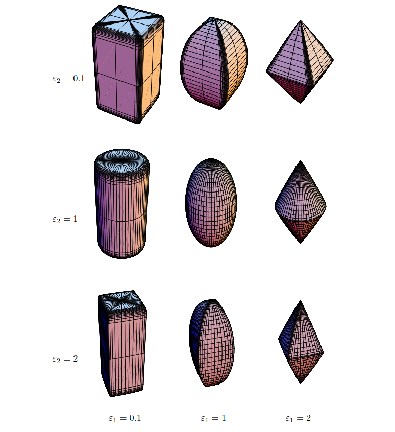
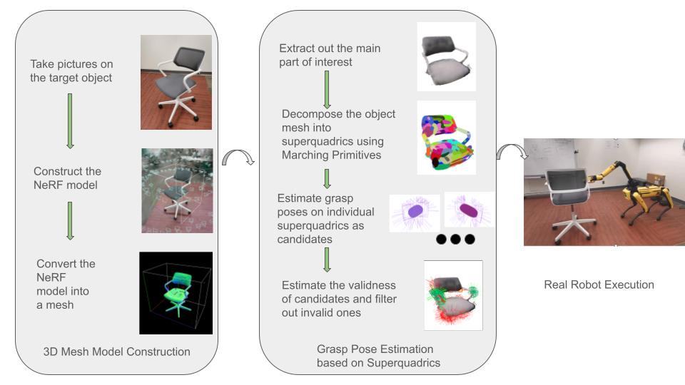
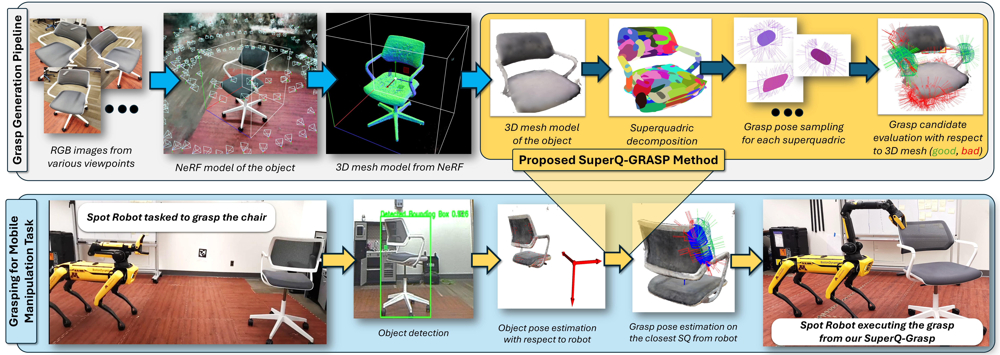

SuperQ-Grasp
Superquadrics
Superquadrics is a series of primitive shape described by the implicit equation: \[\left(\left(\frac{x}{a_x}\right)^{\frac{2}{\varepsilon_2}} + \left(\frac{y}{a_y}\right)^{\varepsilon_2}\right)^{\frac{\varepsilon_2}{\varepsilon_1}} + \left(\frac{z}{a_z}\right)^{\frac{2}{\varepsilon_1}}=1\] where \(\varepsilon_1, \varepsilon_2, a_1, a_2, a_3\)are parameters. Only five parameters as each superquadric is specifed by, it can cover a range of different shapes, including cylinderic or cubic ones

Grasp Pose Estimation
The main contribution of the project is to estimate grasp poses on the large objects, which are uncommon in table scenarios. The key idea is to decompose the target object mesh into several primitive shapes, predict grasp poses on the individual primitive shape, and then filter out the invalid ones. Here, we use Superquadrics as the primitive shape, and depend on Marching Primitives to decompose the target object mesh into several smaller superquadrics.

Real-world Experiments
We validate the performance of our pipeline on the robotic platform
SPOT from Boston Dynamics.
We use instant-NGP to construct the target object mesh.
Also, unlike synthetic data in simulation, the gripper pose in real-world is unknown in advance.
To deal with this issue, we depend on GroundingSAM and LoFTR to
estimate gripper pose.

Results
Experiments on synthetic data
Qualitative Results on selected Objects
Method